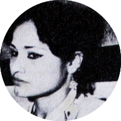
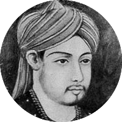
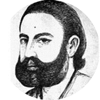

"Sentiment Analysis in Urdu" is a powerful project that analyzes emotions in Urdu text, classifying them as positive, negative, or neutral. Using machine learning and NLP, it helps in social media monitoring, customer feedback analysis, and opinion mining, making automated sentiment understanding more effective for Urdu speakers.
DID YOU KNOW ?
Sara Shagufta was a modernist Pakistani poet. Born in a lower-class family, her family migrated to Karachi from Punjab during the partition of India. Hers was a life of struggles. Belonging to a poor and uneducated family, she wanted to rise socially through education but could not pass her matriculation. She got married when she was 17. This was followed by three more unsuccessful marriages. She was deeply hurt with the death of her new born son and the indifference of her husbands. Badly treated by her husbands and society alike inspired her to write poetry and she continued to write with rare zeal. Suffering from a mental illness, she had to be admitted into an asylum. After an unsuccessful suicide attempt, she finally committed suicide at an early age of 29, by throwing herself before a train.
See MoreDID YOU KNOW ?
The first notable example of literary Urdu can be found in the works of Amir Khusrau, who lived from 1253 to 1325. Khusro was a pioneer in the literary use of the language, and his works included folksongs, riddles, and traditional couplets known as dohas. He was a spiritual disciple of Hazrat Nizamuddin Auliya of Delhi. Khusro died in October 1325, six months after the death of his spiritual master, and his tomb is in Nizamuddin Dargah, next to that of Nizamuddin Auliya.
See MoreDID YOU KNOW ?
The general notion about Mir Taqi Mir is that he was a heartbroken man who only wrote couplets of sorrow and pain. But few bring to light his fondness of animals- which is quite manifest in his creative Masnavis and autobiographical poems. Other poets have also written about animals, but in Mir's couplets animals have a human aspect about them, they depict various human shades and attributes. The characterization of a cat in his Nazm ‘Mohni Billi’ is quite evident, and in ‘Kapi Ka Bachcha’, the baby monkey gives the feeling of a human. Mir’s Masnavi ‘Mor-Nama’, is a tragic story of the love of a queen and a peacock, in which both are burnt to death. Apart from this, he also has poems on chicken, goat, etc.
See MoreDID YOU KNOW ?
In Urdu, the word ‘Mallah’ means a sailor or mariner. The word finds its roots in the Arabic word ‘Milh’, meaning salt. Since seawater is salty, those who made salt from the sea were originally called Mallah. Later, those who frequented the sea came to be known as Mallah. And now, boatmen of sweet-water lakes are referred to as Mallah, too. The word ‘Malahat’, quite common in Urdu literature, is also related to ‘Milh’, it means being salty, sallow, or beautiful. Poets have brought out different shades of this word in various couplets.
See More